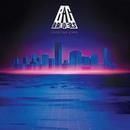

Mr_Xiao_M
哔哩哔哩
Github
[00:00.00]<br/><br/> [00:00.01]欢迎来到 Mr_Xiao_M 的个人主页<br/>也许你可以点一下左边的播放按钮 [00:00.02].<br/>=v=<br/> [00:40.66]It's late and I'm awake <br/> 夜色如水，而我仍未入睡 [00:45.92]Staring at the wall <br/> 凝视着那面墙壁 [00:49.59]Open up my window <br/> 打开窗户 [00:53.34]My head floats out the door <br/> 将头探出门外 [00:57.30]No one else around <br/> 四下无人的夜 [01:00.42]And a shimmer takes my eye <br/> 一束微光照亮我的眼睛 [01:04.80]I lift my head <br/> 我抬起头来 [01:07.94]I'm blinded by the sky <br/> 明光铮亮的天幕让我睁不开眼 [01:12.67]Feel my weight in front <br/> 我的重心正在前移 [01:16.28]Following the sound <br/> 追随着这声音 [01:20.10]It moves away so fast <br/> 它的速度让人望尘莫及 [01:23.31]I fall down to the ground <br/> 我重重地摔在地上 [01:27.78]I know there's more to come <br/> 我知道待会还有更多 [01:30.90]Jump back to my feet <br/> 回归正轨 [01:35.06]And I only see ahead of me <br/> 目视前方 [01:39.18]Chasing down the street (down the street) <br/> 追逐到街角尽头（直至尽头） [02:20.37]Gave my love to a shooting star <br/> 我愿把缠绵爱意奉献给这万千流星 [02:23.12]But she moves so fast <br/> 但她倍道而行着 [02:24.99]That I can't keep up <br/> 这让我望尘莫及 [02:26.89]I'm chasing <br/> 只能继续追逐着 [02:27.89]I'm in love with a shooting star <br/> 我与这万千流星共坠爱河 [02:30.55]But she moves so fast <br/> 而她动若脱兔 [02:32.40]When she falls then <br/> 当她坠落时 [02:34.71]I'll be waiting <br/> 我就静候于此 [02:35.42]Gave my love to a shooting star <br/> 我愿把缠绵爱意奉献给这万千流星 [02:38.07]But she moves so fast <br/> 但她倍道而行着 [02:40.12]That I can't keep up <br/> 这让我望尘莫及 [02:42.19]I'm chasing <br/> 只能继续追逐着 [02:43.20]I'm in love with a shooting star <br/> 我与这漫天繁星共坠爱河 [02:45.91]But she moves so fast <br/> 而她动若脱兔 [02:47.72]When she falls then <br/> 当她坠落时 [02:49.68]I'll be waiting <br/> 我就静候于此 [02:50.63]Gave my love to a shooting star <br/> 我愿把缠绵爱意奉献给这万千流星 [02:53.39]But she moves so fast <br/> 而她动若脱兔 [02:55.30]That I can't keep up <br/> 这让我望尘莫及 [02:57.41]I'm chasing <br/> 只能继续追逐着 [02:58.42]I'm in love with a shooting star <br/> 我与这万千流星共坠爱河 [03:01.33]But she moves so fast <br/> 而她转瞬即逝 [03:03.00]When she falls then <br/> 当她坠落时 [03:05.20]I'll be waiting <br/> 我就静候于此 [03:06.54]Gave my love to a shooting star <br/> 将自己的缠绵爱意悉数献上 [03:09.19]But she moves so fast <br/> 而她动若脱兔 [03:11.01]That I can't keep up <br/> 这让我望尘莫及 [03:12.66]I'm chasing <br/> 只能继续追逐着 [03:13.96]I'm in love with a shooting star <br/> 我与这漫天繁星共坠爱河 [03:16.78]But she moves so fast <br/> 而她转瞬即逝 [03:18.54]When she falls then <br/> 当她坠落时 [03:20.25]I'll be waiting <br/> 我就静候于此

Bag Raiders - Shooting Stars
可能是首在哪听过又不知道歌名的歌
≡